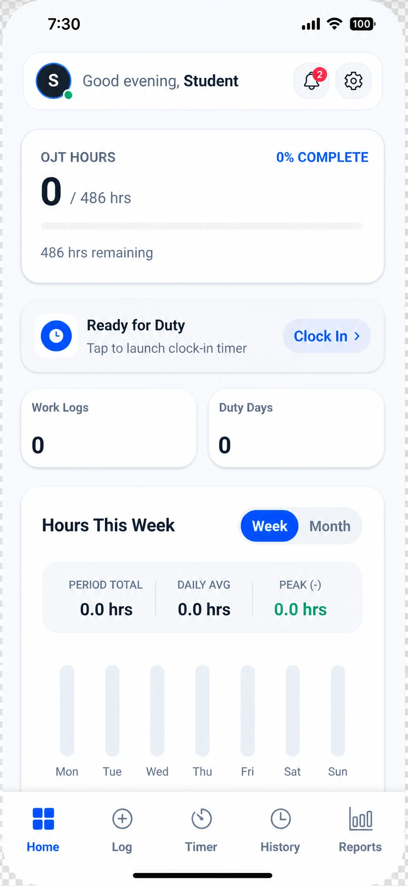

main tabs
Official Guide
View Privacy Policy
Interna App version 1.0.6
User Manual
Learn how to set up Interna, track duty hours, organize work evidence, and prepare records for submission.
Interna for students on duty
Your OJT record, ready when you are.
Keep day-to-day training records organized and turn them into clear documentation for your coordinator.
- Shift timerClock in, pause, and finish
- Proof with every logPhotos and task notes together
- Reports readyPDF · DOCX · CSV

core record storage
report export formats
01
First Run
Get Started
- 1
Install and open Interna
Download Interna from Google Play, open the app, and review the short introduction.
- 2
Complete your OJT profile
Enter your student, school, course, company, and supervisor details. These details appear in generated reports.
- 3
Set your own hour target
Enter the number of OJT hours required by your program. Interna calculates progress against the value you provide.
- 4
Choose your preferences
Configure your OJT dates, working days, reminders, appearance, and optional biometric app lock in Settings.
No account is required. Core profile details, logs, photos, settings, and saved reports remain on your device unless you export or back them up.
02
At a Glance
Home & Progress
Home summarizes the information you need before and after each duty day.
Required hours
See completed hours, percentage progress, and remaining hours based on your configured target.
Clock In
Start a timed duty session directly from Home when you are ready for work.
Work summary
Review total work logs, duty days, and your week or month hour chart.
Profile and alerts
Use the header controls to open your profile, notifications, and Settings.
03
Document the Work
Create & Manage Work Logs
- 1
Open Log
Tap Log in the bottom navigation, then enter the duty date and task or activity.
- 2
Add time and output
Provide time-in, time-out, and an optional quantity when the work can be counted.
- 3
Attach proof photos
Take a photo or select one from your library. Only attach media you are permitted to photograph and retain.
- 4
Save and review
Check the entry before saving. You can later edit or delete supported logs from History.
Recent task chips are shortcuts, not AI. They reuse task names from your existing records to speed up data entry.
04
Track the Shift
Use the Shift Timer
Clock in
Open Timer or use the Home shortcut. Start the timer when your duty begins.
Pause and resume
Pause for breaks when needed, then resume so the recorded working duration stays meaningful.
Clock out
End the session, enter the task completed and optional quantity, then add it to your daily logs.
Long-running alert
If enabled, local notifications can remind you about active or unusually long timer sessions.
Always verify the final time and task details before saving. Interna organizes your records but does not certify attendance on behalf of your school or employer.
05
Review & Correct
Use History
History is the place to confirm that your records are complete before preparing a submission.
Find past duty entries
Review saved work by date and confirm tasks, times, quantities, and proof photos.
Correct mistakes early
Edit supported entries when information is incomplete or inaccurate.
Delete carefully
Deleting a duty log also removes the proof-photo files managed for that log.
06
Prepare the Submission
Reports, Exports & Optional AI
- 1
Choose a date range
Open Reports and set the From and To dates. Interna uses logs within that range.
- 2
Add a learning note
Write what you learned. The optional AI Suggest action can draft a short editable note once per week.
- 3
Create and check the report
AI can prepare a formal weekly narrative from your profile, selected logs, earlier logs, and learning note. Review every statement before using it.
- 4
Save or export
Save a narrative inside Interna, or export the available record as PDF, DOCX, or CSV depending on the report tool selected.
Online and credit-based
AI reports require internet access. Initial use includes three introductory report credits, followed by one recurring free report per UTC week. Eligible mobile users can earn additional credits through verified rewarded ads, subject to weekly limits.
Available after an AI error
If online generation fails, choose Create Offline Report. It uses a local template, does not consume an AI credit, and should be edited carefully because some wording is generic.
Photos are not sent to the AI provider. AI text should still be treated as a draft: correct inaccuracies, remove unsupported claims, and follow your school’s required format.
07
Personalize & Protect
Settings, Security & Backup
Profile and OJT setup
Update identity, course, school, company, supervisor, required hours, OJT dates, and working-week preferences.
Reminders and appearance
Configure supported local reminders and choose your preferred app appearance.
Biometric app lock
Enable optional Face ID or fingerprint protection when supported. Authentication stays with the operating system.
Complete backup
Create a JSON backup before changing devices, clearing app storage, or reinstalling. Store the file somewhere you trust.
Restore replaces current app data. Before restoring a backup, export or back up anything you still need. AI credits are not restored from backup.
08
Troubleshooting
Help & Safe Use
Why is my progress incorrect?
Check your required-hour target, then review saved logs for incorrect time-in, time-out, quantity, or duplicate entries.
Why can’t I create an AI report?
Confirm that the device is online, the selected range contains logs, and a report credit is available. If the service fails, use the offered offline report and review its text.
Why didn’t I receive an ad credit?
The rewarded ad must finish and pass server verification. Credits may remain pending briefly, and weekly reward limits apply.
What should I do before reinstalling?
Create a complete JSON backup and store it outside the app. Uninstalling or clearing app storage can remove local records and managed photo files.
Can Interna replace official attendance verification?
No. Interna helps you organize records. Follow your school, coordinator, and host company’s rules for signatures, validation, and submission.
Need more help?
Contact Interna support
Include your app version and a short description of what happened. Do not send passwords, private keys, or unnecessary personal records.